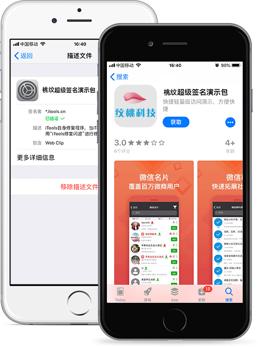
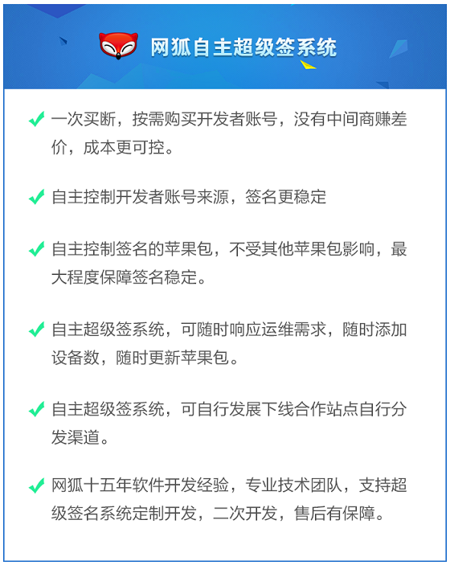
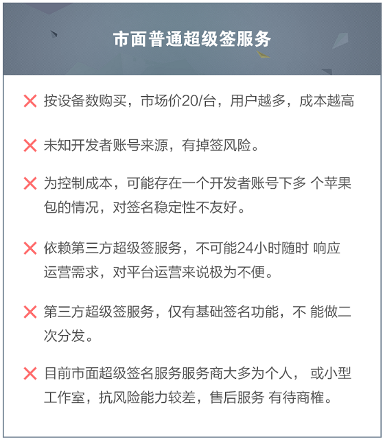

而随着苹果上架政策的收紧，审核标准的不断变化。先是棋牌马甲包被大量封杀，然后个人开发者账号上架的棋牌产品被大规模下架，最后是租赁了企业签的棋牌产品大规模掉签。现如今的状况是，一个合格的棋牌人不但要懂上述的东西，更要懂怎么和苹果“打交道”。而对于棋牌运营商来说，现如今和苹果“打交道”最好的方式，无疑是“苹果超级签”。
“纹桃IOS超级签名系统”就是在这样的行业背景下，横空出世的一款产品。
纹桃为什么要做IOS超级签名系统？
作为国内资历最老的棋牌开发商之一，纹桃深切的体会到：棋牌游戏是一个一荣俱荣，一损俱损的行业。下游运营商的生存环境，直接影响到上游开发商的业绩。纹桃超级签名系统的面世，说浅显点是为了赚钱。可说透彻一点，纹桃何尝不是为了让整个棋牌行业的生态变得更好呢？

毕竟，彻底解决苹果掉签问题，运营商的用户必然得到增长，而高质量的用户增长，才会带来运营商收入的增长。只有运营商赚到钱了，才会找纹桃买更多的产品，整个行业才会走向正循环。 这就是纹桃做IOS超级签名系统的初衷：为了棋牌行业生态的正向发展。
苹果超级签名的市场现状
从纹桃了解到的信息来看，目前从事苹果超级签第三方签名服务或产品、源码出售的，大多为个人或小型工作室。原因有两个：一是本身行业处于萌芽期，没有被大公司注意到。二是市场规模只有这么大，且存在不确定性，很难吸引专业团队的注意。
而对于软件服务来说，团队作战是最基本的。一个技术大牛或许能做出非常好的产品。但只有一个专业、高效的团队才能给你提供优秀的服务。可以这么说，在纹桃之前，超级签名市场基本没有靠谱的团队。
关于纹桃超级签名系统
和纹桃历代产品一样，为满足客户的产品需求，纹桃超级签系统采取开源出售的方式，客户可以选择购买源码或组件。如果想在现有产品的基础上定制开发，纹桃上百人的技术开发团队也可以满足用户各方面的需求。
纹桃超级签名系统和第三方签名服务商有何区别？
这个问题，其实在这两天已经有不少客户问到过。纹桃将从运营成本、签名稳定性、产品功能、售后服务等几个方面给大家做一个对比，希望能给各位运营商一些帮助。


总而言之，如果你只是想尝试一下苹果超级签名到底有没有传说中的那么神奇，那么你可以选择市面上的第三方签名商试试水。但如果你本身具备一定用户规模，且对运维响应速度要求较高的话，建议还是要有自己的IOS超级签名系统。
纹桃从事棋牌游戏开发十五年，不少做棋牌的朋友也都来我们公司实地考察过。产品、服务的专业性都是有口皆碑的。“纹桃超级签名系统”的面世，也是旨在为广大运营商提供靠谱的、专业的服务。了解更多“纹桃超级签名系统”可联系我司商务进行咨询。联系电话：18711739336
添加南小姐微信咨询更多“超级签”问题

游戏产品
PRODUCTS

售后服务
SERVICE

技术支持
TECHNOLOGY

运营指导
OPERATING